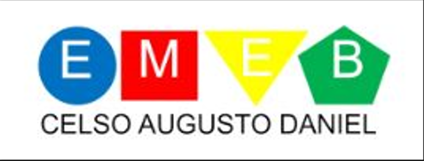
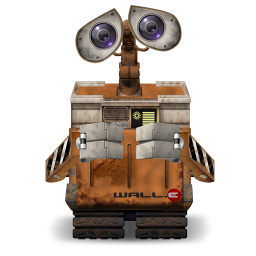
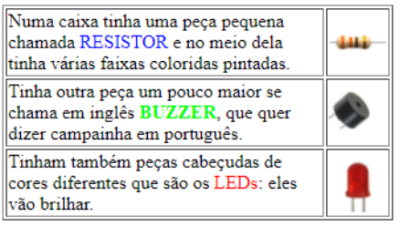

Desde abril/2022 estamos na UFABC no curso de Cyberpedagogia, hoje nossa aula foi sobre arquivos html, novidades que impulsionam e aguçam a vontade de aprender cada vez mais....
Este é o Logo da Escola onde trabalhamos:

Este é o Logo da Universidade onde realizamos o curso:
O personagem Wall-E foi o responsável pela escolha do meu ícone:

Este é o som que desejo ouvir ao final do curso:
Como o curso ainda está acontecendo, veja uma das tabelas de materiais que estamos utilizando para efetivar nosso primeiro projeto:
Componentes eletrônicos do meu projeto de Robótica:

Como professora, há a preocupação do processo de ensinno aprendizagem, assim como o de cultivar adultos responsáveis consigo e com o mundo, desta forma, este é o personagem que nos representa
Este diário é colaborativo, e toda opinião será bem vinda, pois pensaremos com carinho em todas as sugestões. Até mais.